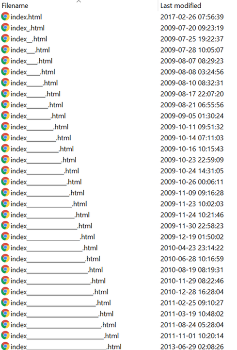
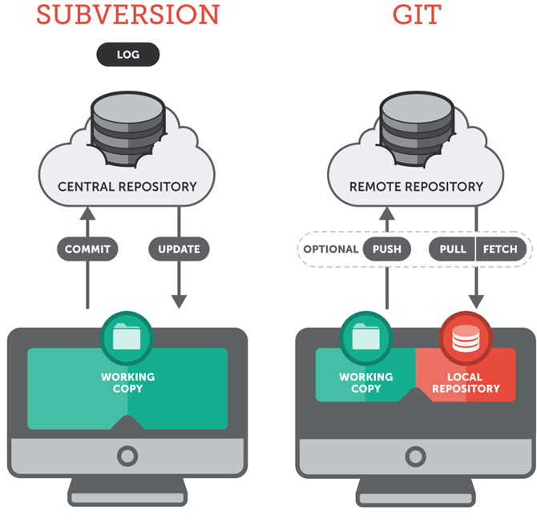
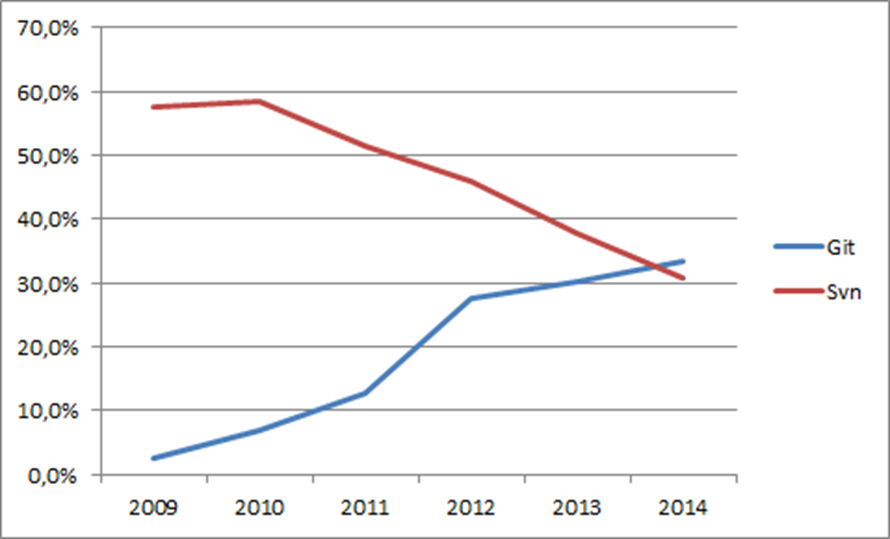
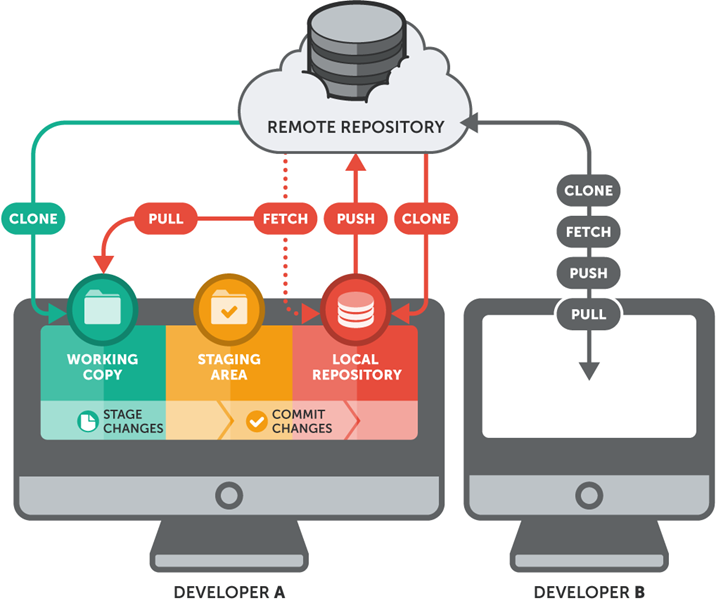
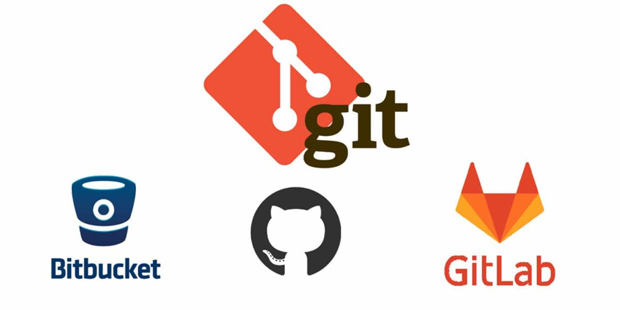

Verziókezelő rendszerek
Bevezetés
Ebben a szekcióban megismerkedünk a verzió kezelés fogalmával, több verziókezelő rendszerrel és módszerekkel amikkel a forráskódunkat egyszerre többen tudják módosítani.
Verziókezelés
Verziókezelés alatt több verzióval rendelkező adatok kezelését értjük. Leggyakrabban a mérnöki tudományokban és a szoftverfejlesztésben használnak verziókezelő rendszereket fejlesztés alatt álló dokumentumok, tervek, forráskódok és egyéb olyan adatok verzióinak kezelésére, amelyeken több ember dolgozik egyidejűleg.
A verziókövetés lényegében valamilyen információ - például a forráskód - több változatának menedzselése.

Verziókezelő rendszerek jellemzői
- Nyomon követés, hogy mikor és hogyan változott a könyvtárunk és ki végezte el a változtatást
- Visszaállítható bármelyik korábbi állapota a könyvtárnak, illetve lekérhető a legfrissebb verzió
- Szinkronizálni tud egy másik gépen levő hasonló könyvtárral (átvezetve a változásokat) és jelez, ha ezt nem tudja automatikusan elvégezni
- Minden verziót egy szám vagy hash azonosít
- A verziók összefüggései egy gráffal vizualizálhatóak a legegyszerűbben
Verziókezelő rendszerek története
- Generáció: egyszerre csak egy ember dolgozhatott egy fájlon, amikor egy fejlesztő elkezdett dolgozni a fájlon a
lockművelettel lezárta azt, így más fejlesztő azt nem szerkeszthette. - Generáció: a projekt egy központi szerveren helyezkedett el, amelyben a fájlokat
merge -> commitsorrendben lehetett változtatni. - Generáció: megjelentek a lokálisan tárolt repositoryk, ezzel levéve a súlyt a központi szerverről. Nem szükséges merge a commithoz.
Verziókövetéssel egyébként sok helyen találkozhatunk - például a Microsoft Word is rendelkezik beépített verziókövető rendszerrel - esetünkben viszont két verziókövető rendszert érdemes tárgyalni, az a Git és az SVN.
Git vs SVN
Mind a Git, mind az SVN (Subversion) verziókezelő rendszerek, amelyek segítenek a fejlesztőknek a kódbázis nyomon követésében, a változtatások kezelésében és a csapatmunka támogatásában. Azonban működési és tervezési különbségek vannak közöttük.
| Git | SVN |
|---|---|
| Elosztott rendszer | Centralizált rendszer |
| Offline is elérhető | Hálózatot igényel a használata |
| Komplexebb rendszer | Egyszerűbben átlátható/tanulható |
| A fejlesztési ágak kezelése komplikáltabb | A fejlesztési ágak könnyen kezelhetőek |
| A konfliktusok száma lecsökken | A konfliktusok száma nagyobb |
| Gyorsabb rendszer | Lassabb működésű |

Git
Az elkövetkező órák során a Git verziókövető rendszert fogjuk használni, így az alábbi fogalmak is erre a verziókezelő szoftverre vonatkoznak (néhány fogalom más verziókezelő esetén - például SVN - nem értelmezhető/mást jelent). A Git verziókezelő rendszer a szöveges állományok, így tipikusan a forráskód fájlok, dokumentációk változáskezelésében hatékony. Ez azt is jelenti, hogy bizonyos fájlokat nem érdemes verziókövetés alá vonni Git-tel (bizonyos nézőpontból pedig elvi hiba, hiszen a Git nem tárhelyszolgáltatásként működik).
Figyelem
Így tehát a következő állományokat NE tároljunk: rejtett fájlokat, futtatható állományokat, tömörített mappákat pl.: bin/, tmp/, node_modules/, .class, .log, .jar, .zip, .rar

Git alapfogalmak
- Master: a fő fejlesztési ág
- Branch: különböző elágazások a fejlesztésben, amelyek később visszatér(het)nek a master-be
- Conflict: ugyanaz a dokumentum két helyen megváltozik (pl. más branch-eken), és a változtatások automatikusan nem egyesíthetőek
- Repository(remote, local): a forráskódok, history (korábbi események) tárhelye (szerver)
- Working copy(working directory): aktuális munkakönyvtár egy adott repository-hoz nézve
- Commit: a fájlok eltárolása a local repository-ban
- Staging area: átmeneti terület a local repository és a working directory között, a következő commit-ra jelölt fájlokat tartalmazza
- Push, Pull: a local és a remote repository közötti commit-ok feltöltése/letöltése
- HEAD: a legutolsó commit-ra való hivatkozás az aktuális branch-ben
- Checkout: branch-ek közötti váltásra szolgál
- Clone: remote repository lemásolása a saját gépre (első alkalommal)
- Merge: branch-ek egyesítése

Git parancsok
git init: Új Git repository létrehozása egy meglévő projektben.git clone [url]: Egy távoli repository klónozása a helyi gépre.git add [file(s)]: Fájlok hozzáadása a staging területhez, hogy a következő commitban szerepeljenek.git commit -m "[message]": Staging területen lévő változtatások rögzítése egy új commitban.git status: Státusz lekérdezése a munkakönyvtár, a staging és az előzmények között.git log: Előzmények (commitok) listázása időrendi sorrendben.git pull: Távoli repository legfrissebb változtatásainak letöltése és a helyi állapot frissítése.git push: Lokális változtatások feltöltése a távoli repositorybe.git branch: Jelenlegi ágak listázása.git checkout [branch/commit]: Átváltás másik ágra vagy egy korábbi commit állapotára.git merge [branch]: Aktuális ágra másik ág beolvasztása.git remote -v: Távoli repositoryk listázása, ahonnan vagy ahova adatokat küldhetünk.git diff: Változtatások megtekintése a munkakönyvtár és a staging terület között.git stash: A munkakönyvtári változtatások ideiglenes mentése, hogy átválthassunk másik ágra.git reset [file(s)]: Fájlok eltávolítása a staging területről, de a munkakönyvtárban tartva a változtatásokat.git remote add [name] [url]: Új távoli repository hozzáadása a repository listához.git push -u [remote] [branch]: Első alkalommal a lokális ág feltöltése a távoli repositorybe.git rebase [branch]: Az aktuális ág újraalapozása a másik ágra, ami simább commit történetet eredményezhet.
Ezek csak néhány alapvető Git parancs. A Git rendelkezik további parancsokkal és lehetőségekkel is.
Git elágazási stratégiák
A Git elágazási stratégia egy meghatározott és szervezett megközelítés arra, hogy hogyan hozzunk létre, használjunk és kezeljünk ágakat (branch) egy Git verziókezelő rendszerben. A célja, hogy struktúrát adjon a fejlesztési folyamatnak, lehetővé tegye a párhuzamos munkát, csökkentse a konfliktusokat és a hibákat, és segítse a fejlesztői csapatot hatékonyabban dolgozni.
- Nem hozunk létre külön ágakat a fejlesztés során.
- Minden módosítást a master branchre commitolunk.
- Solo projekteken kívül kerüljük ezt a megközelítést.
- A master branchen kívül létrehozunk egy develop branchet, ahova commitoljuk a módosításainkat.
- A master branchet mindig release-elhető verzióban tartjuk.
- Solo projekteken kívül kerüljük ezt a megközelítést is.
- Minden feature-nek külön branchet hozunk létre és arra commitoljuk a módosításainkat.
- Ha egy feature elkészül, akkor az adott feature-t vissza mergeljük a master branchre.
- Lehetőséget ad feature-k párhuzamos fejlesztésére.
- Egyesíti a develop és feature branch stratégia előnyeit.
- Létrehozunk egy develop branchet, így a master branchünket mindig release-elhető állapotban tudjuk tartani.
- A különböző fejlesztéseknek külön feature brancheket nyitunk.
Ezen stratégiák mindegyike különböző előnyöket és alkalmazási eseteket kínál, és a csapat méretétől, a projekt típusától és a folyamatos integráció és deployment követelményeitől függően választhatók. A lényeg, hogy a csapat jól értse és szigorúan tartsa magát a kiválasztott stratégiához, hogy a fejlesztés folyamatos és rendezett legyen.
Git szolgáltatók

A Git egy nyíltforrás-kódú verziókezelő rendszer. GitHub, GitLab, Bitbucket pedig tárhely szolgáltatók amik a Git-et használják. A giten túl extra szolgáltatásokat biztosítanak a felhasználók számára. Mi az órák során a GitHub-bal fogunk dolgozni mert:
- Ingyenesen használható
- De facto sztenderd az open-source projektek világában
- A különböző szolgáltatók által nyújtott szolgáltatásokra nem térünk ki a tananyag során.